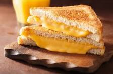

Grilled Cheese

This easy grilled cheese sandwich has a crispy Parmesan crust and a gooey Cheddar and bacon filling, and is simply the best I've ever had! As far as grilled cheese goes, this is it!
Yes, you do need a recipe for a grilled cheese sandwich. And we've got the best grilled cheese sandwich recipe on the internet! This five-ingredient sandwich is super easy to make and will be the best grilled cheese you've ever tasted in your life.
What are you waiting for? Save this recipe!
Ingredients
- ¼ cup butter, softened
- 1 cup freshly grated Parmigiano-Reggiano cheese
- 8 slices cooked bacon
- 4 slices Cheddar cheese
- 8 slices sourdough bread
- Mash together butter and Parmesan cheese in a small bowl until evenly blended.
- Make sandwiches by placing two slices of bacon and one slice of Cheddar cheese on half of the bread slices. Top with the remaining slices of bread.
- Heat a large skillet over medium heat. Spread some of the butter mixture on the top of each sandwich. Place sandwiches butter side down in the skillet. Spread the remaining butter mixture on the other sides. Cook until golden brown on each side, about 3 minutes per side.
- To serve, cut in half diagonally.